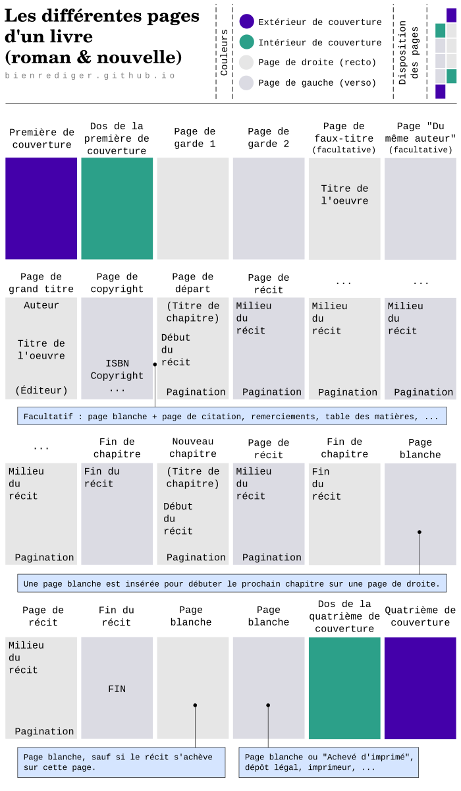
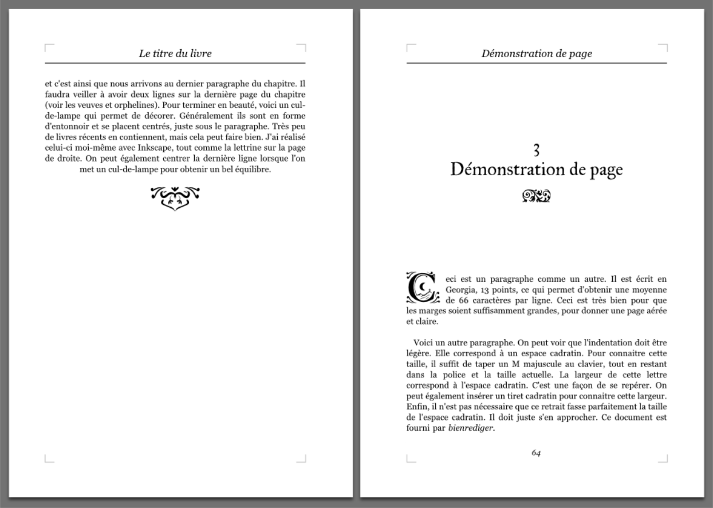

Préparer son livre à l'impression 1/3 (par Diatomée)
Lorsque l’on termine un roman ou une nouvelle, on a souvent qu’une envie, celle de partager notre histoire. Pour cela, on peut essayer les maisons d’édition (et bonne chance…) ou décider d’éditer soi-même son ouvrage et en demander l’impression et la conception, ou tout faire soi-même, ce qui reste relativement compliqué lorsque l’on ne dispose pas du matériel.
Pour partager son texte, il peut être plus simple de le proposer en version électronique (sur un site web, un blog, une liseuse, en epub, en pdf,…). Les choix ne manquent pas, mais là encore, une belle mise en forme rendra d’avantage la lecture agréable. L’édition numérique, pour les supports numériques, fera l’objet d’un autre article.
Préparer son livre à l’impression propose de passer en revue les différents points permettant d’obtenir le document le plus lisible et joli possible. Il parle de typographies, de marges, des styles du texte et de mes conseils de mise en page. En revanche, il ne contient pas les règles d’écritures (intrinsèques au texte) et ne parlera donc pas des types d’espaces, des césures, de la mise en place des dialogues, etc. Cela est réservé pour une prochaine publication sur le blog. On verra également les façons d’enjoliver les pages à l’aide des lettrines, des fleurons et des divers ornements.
Il ne faut jamais oublier que le livre est en lui même une œuvre d’art et sa qualité (l’attention portée à la mise en page) devrait toujours refléter la passion mise pour son contenu (votre histoire).
I. Le livre et ses pages
1. Choisir le format et la taille
Le format du livre est la première chose à laquelle penser lorsque l’on décide de faire une mise en page.
Il existe trois principaux formats de livre : portrait, carré et paysage. Le livre au format portrait est largement utilisé pour les romans et nouvelles. Le texte est plus lisible dans ce format, car la largeur de ces lignes reste courte. Ceci permet, lors de la lecture, de passer à la ligne suivante sans relire la même ou en sauter une. Ce format permet donc une meilleure lisibilité du texte.
Il est cependant possible d’envisager l’utilisation d’un format carré ou paysage dans lequel les pages comporteraient, par exemple, deux colonnes : une pour le texte et une autre pour une illustration. La suite de l’article ne mentionnera que le format portrait (dit aussi À la française), mais demeure utile pour les autres formats.
Réfléchir à la taille du livre est très important. Plusieurs critères sont à prendre en considération. Plus un livre est grand, moins il comporte de pages, moins il est cher à concevoir. Ceci est vrai pour un roman de 50 000 caractères, mais l’est moins (voir faux), pour une nouvelle de 15 000 caractères. Tout dépend de la finition, de la reliure, des matériaux de couverture, etc. Un livre trop grand comportant peu de pages peut paraître « encombrant pour pas grand chose ». Il faudra donc trouver le juste milieu. Est-ce que mon livre pourra être lu sur la plage, dans le train ou durant une traversée de l’Islande à pied avec juste un sac à dos ? Dans ces cas, il vaudra mieux prévoir petit. Faire le livre en deux versions peut être judicieux pour économiser le papier et répondre aux types d’utilisation nomade et « de bureau » (installé à une table, chez soi ou dans une bibliothèque par exemples).
La taille que l’on peut juger maximale est le A3 (29,7 x 42 cm), car les presses numériques ne permettent pas d’avantage. Cela représente un très grand livre, pas des plus utiles pour contenir un roman, encore moins une nouvelle.
La taille minimale pour un roman ou une nouvelle serait celle correspondant au livre de poche (11 x 18 cm, mais on trouve également du 11 x 17 cm, du 13 x 20 cm, ...). C’est un format entre le A6 et le A5. Je trouve ce format intéressant pour y mettre une nouvelle ou un roman de moins de 350 pages. Cela dépend du papier, mais un texte de 300 pages aurait une épaisseur d’environ 2 cm ce qui montre qu’il y a de quoi lire sans que ça ressemble non plus à un pavé. C’est la taille idéale pour lire n’importe où.
La taille que je préfère est le A5 (14,8 x 21 cm). On l’appelle parfois « Grand poche » et comme pour le format de poche, les dimensions peuvent légèrement varier (on trouve par exemple du 15 x 23 cm chez certains imprimeurs). C’est un bon compromis entre petit et grand livre. Il permet d’aérer le contenu et d’insérer des ornements, de le rendre plus « précieux ». Des illustrations peuvent y être insérées en une taille correcte et il reste transportable.
Enfin, entre le A5 et le A3, il reste le A4 et ses dérivés. Je pense que cette taille peut être utile pour le roman contenant de grandes illustrations, aux finitions de beau livre. Il est fait pour une utilisation sur table. Ce format est souvent utilisé pour les bandes dessinées. Entre A4 et A5, il y a de très jolis livres, comme par exemple Le Hobbit de John Ronald Reuel Tolkien qui dispose d’un format d’environ 20 x 26 cm en version reliée chez Christian Bourgois.
2. Les types de page
Cette section décrit les différents types de page qui forment un livre. Il y a deux pages par feuillet de papier : le recto et le verso. La page de droite d’un livre correspond au recto d’un feuillet, tandis que la page de gauche correspond au verso d’un feuillet. Le recto est appelé belle page. Le lecteur découvre toujours en premier la page de droite lorsqu’il tourne la page qu’il vient de consulter. C’est pour cette raison que les titres, la table des matières, le début d’une préface et les autres éléments à mettre « en avant » doivent se trouver sur une page de droite.
Le schéma ci-dessous montre les types de page qui composent un livre.

Dans l’exemple ci-dessus, la pagination débute au numéro 7 et quelque soit le livre, elle débute par un chiffre impair. Remarquons qu’il ne faut aucune pagination sur les pages hors récit, les pages blanches dans le récit et les pages de fin de chapitre, qu’elles soient à gauche ou à droite.
Voici le détail pour la page de :
- faux titre : Elle contient le titre du livre et un éventuel sous-titre.
- copyright : Elle contient l’ISBN, le nom de l’auteur, les informations relatives à l’éditeur, la date de publication précédée de © (copyright) et un texte sur la propriété intellectuelle que voici :
« D’après les articles L.111-1 et L.123-1 du Code de la propriété intellectuelle, l’auteur jouit d’un droit de propriété exclusif sur son œuvre, dans son intégralité. Aux termes des articles L.335-2 et suivants de ce même Code, les copies ou reproductions destinées à une utilisation collective sont interdites. Toute représentation ou reproduction intégrale ou partielle faite par quelque procédé que ce soit, sans le consentement de l’auteur ou de ses ayants droit ou ayants cause, est illicite et constitue une contrefaçon. »
II. La mise en page du récit
La mise en page du récit joue un rôle important dans la qualité de l’ouvrage. Elle doit répondre à deux impératifs :
- offrir une lecture fluide et agréable.
- être cohérente sur l’ensemble du livre.
Pour cela, il faudra définir des styles de pages, mais aussi des styles de textes. Il faudra créer les pages nécessaires, vues dans le chapitre précédent et donner un côté pratique, avec la pagination et pourquoi pas une table des matières pour retrouver facilement la page du chapitre où l’on s’est arrêté de lire.
Ce chapitre n’offre pas un tutoriel pour réussir une belle mise en page en utilisant un logiciel. Il détaille ce qu’il faut faire, point par point (représentés par les sous-sections qui suivent). En revanche, la seconde partie expliquera, entre autres choses, comment réaliser la mise en page avec Writer de la suite LibreOffice.
Enfin, la mise en page est également une question de goût. Ils doivent rester le plus possible en adéquation avec les « règles » de mise en page.
1. Les marges
Les marges représentent l’espace vide entre le texte et la page. Elles sont au nombre de quatre :
- la marge intérieure,
- la marge extérieure,
- la marge haute,
- la marge basse.
Plus les marges sont grandes, plus le livre contient de pages et plus il est qualifié de « luxueux ». Cependant, le texte du récit se trouvant entre les marges latérales ne devra pas faire moins de 30 caractères pour ne pas ralentir la lecture à cause des fréquents passages à la ligne et ne devra pas faire plus de 70 caractères au risque de ne pas lire la bonne ligne lorsque l’œil la cherche. Le confort de lecture se situerait entre 50 et 60 caractères par ligne. J’aime bien m’approcher ou dépasser légèrement les 60 caractères, afin de limiter les espaces disgracieux entre mots ou le nombre de césures d’un texte justifié. Pour un petit format (11 x 17 cm), il est difficile de dépasser les 60 caractères sans trop réduire le texte et les marges. Pour ce cas, 50 à 60 caractères par ligne sont en effet l’idéal.
La marge intérieure, dans la plupart des cas, devrait être la plus grande des quatre, car c’est vers l’intérieur du livre que se trouve la reliure et que le pli se fait. Le livre doit être lu même s’il n’est pas ouvert à 180 degrés. Ceci est indispensable, surtout si la reliure est un dos carré collé (le dos prendrait des plis disgracieux et les pages pourraient se décoller). En revanche, si le livre peut être pleinement ouvert, grâce à différentes techniques le permettant (mais rarement proposées par les imprimeurs), cette marge intérieure peut être égale à celle de l’extérieur de la page. Les différents assemblages de livre seront proposés dans un futur article.
Pour la marge haute et la marge basse, cela dépend des goûts. Soit on met pareil qu’à l’extérieur, soit on les met plus petites. Plus petites, elles donnent :
- l’impression d’ « affiner » le texte,
- un équilibre avec le texte justifié du récit et le texte d’entête, par rapport à la marge extérieure,
- un gain de pages qui peut être considérable.
Ces deux marges peuvent tout à fait avoir des tailles différentes.
En règle générale, plus le format du livre est grand, plus les marges peuvent grossir.
Pour résumer et donner des dimensions, je dirais que pour un livre relié d’une façon habituelle (celle que propose généralement les imprimeurs), il faut : une marge intérieure plus grande que les marges du haut, du bas et de l’extérieur. Ces trois dernières marges auraient une taille identique, à moins que les marges hautes et basses soient plus courtes. Pour exemple, voici ce que je ferais sur des formats pour les romans :
Schéma des marges pour un roman standard
- 19 x 25 cm : haut, bas : 20 mm, ext. : 28 mm / int. : 32 mm
- A5 : haut, bas, ext. : 15 mm / int. : 20 mm
- Poche (11 x 17 cm) : haut, bas, ext. : 10 mm / int. : 15 mm
2. L’entête et le pied de page
Une page peut contenir un entête et un pied de page, mais peut aussi comporter uniquement l’un des deux (la pagination étant utile lorsque la nouvelle ou le roman dépasse les dix pages).
Souvent, la pagination se trouve dans le pied de page. Quant à l’entête, lorsqu’il est présent, il contient généralement sur la page de gauche le titre principal de l’œuvre et sur la page de droite le titre du chapitre en cours, ou encore le titre de la nouvelle dans le cas d’un recueil de nouvelles. Mais une pagination peut tout à fait se trouver dans l’entête sans que cela ne choque. En revanche, les informations en entête et en pied de page ne doivent pas être redondantes. Je ne trouve pas utile d’avoir, en même temps, sur la page de gauche et la page de droite le titre du livre. Pourtant, cela se trouve dans un bon nombre de livres.
L’entête se positionne après la marge haute, tandis que le pied de page se positionne avant la marge basse. Les marges restent les mêmes, qu’il y ai ces éléments ou pas.
3. Les divers ornements et lettrines
Les anciens livres comprenaient davantage d’ornements que ceux de nos jours. Ornementer un livre peut lui ajouter une belle valeur (si c’est réussi) et s’il est difficile d’agrémenter un format poche de fleurons et de culs-de-lampe (voir ce que c’est dans l’image qui suit), il est plus facile d’enjoliver les formats A5 et plus. Je dirais qu’il ne faut pas trop en faire. Une lettrine à chaque début de chapitre a plus d’impact que si elle est placée au début de chaque paragraphe. Les ornements doivent représenter l’histoire. Inutile de garnir les pages de petites têtes de mort si le récit est porté sur le thème de l’amour. J’entends déjà dire : « Même pour un récit sur la nécrophilie ? ». J’aurai tendance à dire que oui. Il serait également inapproprié de placer des cœurs un peu partout. L’idée est simplement d’enjoliver le texte. Les fleurons (ornements représentants souvent des fleurs) et autres ornements ne doivent pas détourner l’attention du lecteur. Il doit pouvoir se concentrer uniquement sur le texte. « Autant ne pas mettre d’ornements alors ? ». Eh bien cela dépend de si on possède le sens de l’esthétique. Cela s’apprend. Les ornements permettent, lorsque l’on ouvre le livre, de se dire : « Ouah, c’est un beau livre ». Rien de plus, rien de moins. En fait, ils ont le même rôle qu’une couverture illustrée, sauf qu’on ne s’y attarde pas. Pour cela, il y a les illustrations, qui elles, peuvent être en couleur, prendre toute une page, voir deux en vis-à-vis.
L’image suivante est cliquable et le texte permet d’apprendre des choses.

Les ornements et lettrines peuvent paraître démodés, mais rien n’empêche de les mettre au goût du jour ou d’en créer. Il faut savoir que les lettrines et ornements se trouvent dans des polices de caractères spéciales. Certaines sont libres de droit et se trouvent facilement sur Internet. Il est possible de créer soit même ses polices de caractères spéciales « lettrines et ornements », mais cela nécessite des compétences de typographe et de graphiste (qui s’apprennent si l’envie vous prend). Au sujet des polices de caractères « non conventionnelles », il faut savoir qu’un bon nombre d’imprimeurs n’accepte pas d’autres polices que celles présentent par défaut dans les systèmes d’exploitation. Cela est mal. Il n’y a pas que le Times New Roman, l’Arial et le Verdana dans la vie et si la typographie est fournie avec le document qui contient l’histoire, je ne vois pas pour quelle raison elle ne pourrait pas être imprimée (si elle est libre de droit ou que vous en êtes le propriétaire). C’est pourquoi ces imprimeurs sont à fuir, sauf si le document est en pdf et que les polices sont incorporées dedans ou que des polices « conventionnelles » sont utilisées. Les lettrines et ornements ne font pas partie de ces dernières.
Voici une belle typographie proposant des ornements : Fell Types.
Dans certains livres, la lettrine est remplacée par une mise en gras et en majuscule des quelques premiers caractères du premier paragraphe. Je trouve cela moins esthétique, surtout lorsqu’un mot est coupé en deux styles différents (le style spécial et le style du corps de texte normal).
4. Le texte
Il y a tellement de choses à dire sur le texte qu’il faudrait y consacrer un article comme celui-ci. Je vais donc me contenter d’indiquer les petites choses qui font un bon texte (comprendre : une bonne lisibilité).
Les titres sont souvent centrés et écrits avec une typographie différente du récit. Ils sont également plus gros pour être mis en valeur. Les titres ne se finissent pas par un point.
Les paragraphes doivent être justifiés sur la largeur de la page. Ils commencent par un alinéa qui fait généralement la taille d’un M majuscule en largeur (un espace quadratin). La taille de la police tourne autour des 12 pixels, mais cela est très variable d’une police à l’autre. Il ne faut pas oublier qu’une ligne doit comporter entre 50 et 70 caractères. J’aime particulièrement la police Georgia. Les polices de type serif (avec empattements sur les caractères) rendent généralement bien dans les paragraphes.
Il faut penser à régler l’interlignage, voir aux césures et vérifier que l’ensemble est harmonieux.
Enfin, avant l’impression d’un livre, il ne faut pas hésiter à imprimer deux ou trois pages (pas le livre en entier) en taille réelle pour mieux se rendre compte des tailles du texte. Penser le livre comme une œuvre à part entière, égale à l’histoire qui y est véhiculé, est le meilleur moyen de réussir la mise en forme du texte et de la page.
5. La veuve et l’orpheline
Lorsque la première ligne d’un paragraphe se trouve en bas de page, on dit que cette ligne est orpheline. Lorsque la dernière ligne d’un paragraphe se retrouve en haut d’une nouvelle page, on dit qu’elle est veuve. Les veuves et orphelines sont à proscrire. Un minimum de deux lignes du paragraphe doivent être sur la même page, se tenir compagnie. Cependant, si le paragraphe ne fait qu’une ligne, la veuve comme l’orpheline sont tolérées.
III. Conclusion de la première partie
La mise en page peut sembler assez simple, mais c’est une toute autre histoire lorsqu’il est question d’appliquer les règles. Nous n’avons vu que la mise en page « habituelle » de roman, mais il faut savoir qu’une page de roman peut très bien contenir plus d’une colonne de texte, avec des gouttières entre chacune d’elle. Un roman peut également se présenter sous forme de rouleau, de livre dépliant (en accordéon), …
La seconde partie proposera d’appliquer ce qui a été vu ici dans le logiciel Writer, de la suite Libre Office. Elle parlera également de Scribus (équivalent d’InDesign, open source et permettant la mise en page professionnelle). Enfin, un document ODT avec mise en page succincte sera disponible au téléchargement.
Avez-vous trouvé cet article utile ? Réussissez-vous à tout mettre en page comme vous le souhaitez ? N’hésitez pas à participer ou à donner vos avis via les commentaires.